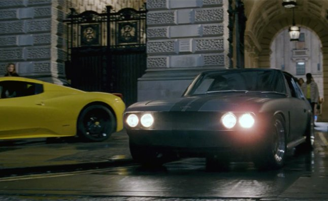

City Racer
Das Projekt
Auftrag
Diese Webseite wurde für ein Schulprojekt erstellt. Der Auftrag ist es, für einen Wettbewerb der Zürich Filmfestspiele einen 2-minütigen Trailer zu erstellen und eine Webseite zu programmieren, welche für den Film zu wirbt und alle Informationen verfügbar macht. Der Film handelt hauptsächlich von Autorennen, und der Tuningszene. Dazu gehören auch Drogendeals und Bandenkriege um ihre Viertel der Stadt, welche die Protagonisten in aus der Tuningszene erleben. Ich habe mich für diese Art von Film entschieden, da Fast and Furious einer meiner lieblingsfilme ist und ich mir allgemein gerne Actionfilme ansehe. Zudem denke ich, dass sich mit Autos ohne grossen Aufwand ohne Budget Spannung und Action in den Trailer einbauen lässt, auch deshalb, weil man es spannend und divers filmen kann.

Zielgruppe
Der Film soll hauptsächlich Junge Menschen im Alter von 16-30 Jahren ansprechen allerdings könnte er auch gute ältere Menschen ansprechen. Obwohl Autos eine grosse Rolle spielen werden, sollte der Film nicht nur Autofans ansprechen, sondern auch alle potenziellen Interessenten, welche gerne Filme über Gangs und mit Action anschauen. Mit dieser Zielgruppe hätte der Trailer ein potenzielles Publikum von etwa 400'000 Menschen, da der Film nur in Schweizerdeutsch vertont wird und somit viele möglichen Interessenten, zum Beispiel im Tessin oder in der Westschweiz wegfallen.